Album fotograficoPhoto albumFotoalbumÁlbum fotográficoAlbum photoÁlbum de fotos
Le stagioni dell'acetaiaThe seasons of the acetaiaDie Jahreszeiten der AcetaiaLas estaciones de la acetaiaLes saisons de l'acetaiaAs estações da acetaia
Benvenuti nell'album della nostra acetaia: la famiglia, i controlli in acetaia, il fiume e i fiori della pianura.Welcome to the album of our acetaia: the family, the checks in the acetaia, the river and the flowers of the plain.Willkommen im Album unserer Acetaia: die Familie, die Kontrollen in der Acetaia, der Fluss und die Blumen der Ebene.Bienvenidos al álbum de nuestra acetaia: la familia, los controles en la acetaia, el río y las flores de la llanura.Bienvenue dans l'album de notre acetaia : la famille, les contrôles dans l'acetaia, le fleuve et les fleurs de la plaine.Bem-vindos ao álbum da nossa acetaia: a família, os controles na acetaia, o rio e as flores da planície.
Controlli e travasi in acetaiaChecks and transfers in the acetaiaKontrollen und Umfüllen in der AcetaiaControles y trasiegos en la acetaiaContrôles et transvasements dans l'acetaiaControles e trasfegas na acetaia
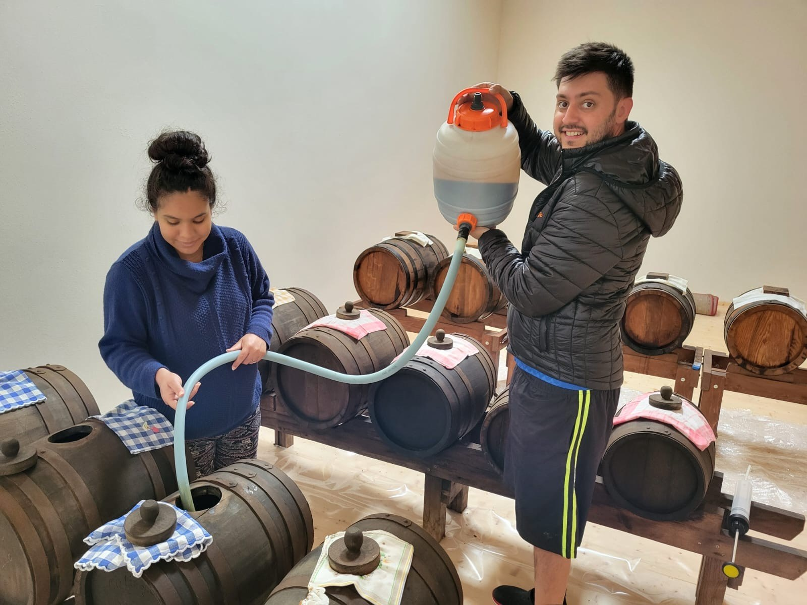
Leonardo e Talita durante i travasi e i rincalzi delle botti, aprile 2025Leonardo and Talita during the transfers and topping up of the barrels, April 2025Leonardo und Talita beim Umfüllen und Nachfüllen der Fässer, April 2025Leonardo y Talita durante los trasiegos y rellenos de los barriles, abril de 2025Leonardo et Talita pendant les transvasements et le remplissage des fûts, avril 2025Leonardo e Talita durante as trasfegas e reposições dos barris, abril de 2025
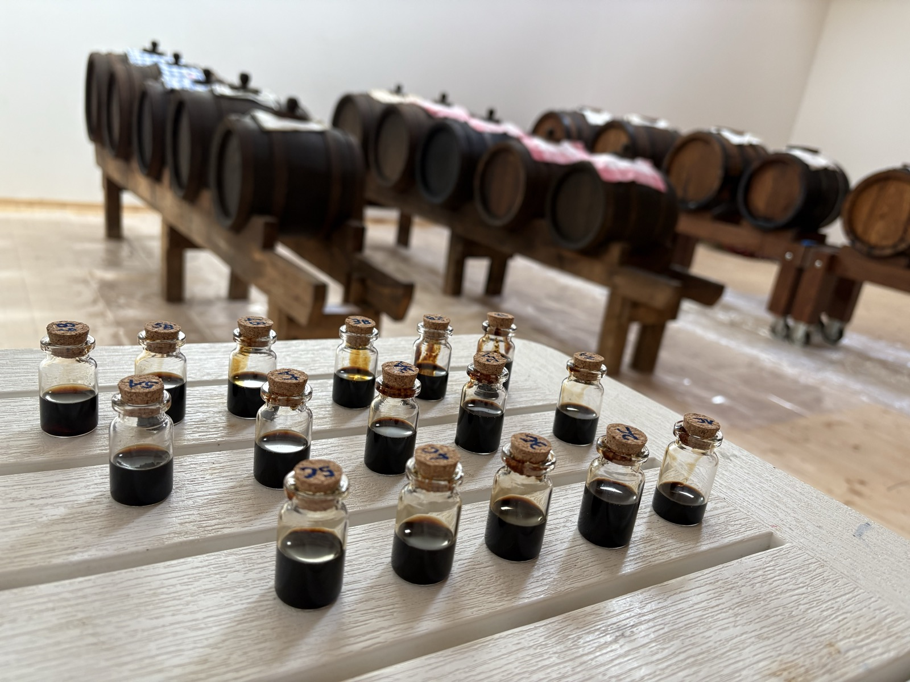
I campioni di ogni botte, pronti per i controlliSamples from every barrel, ready for the checksProben aus jedem Fass, bereit für die KontrollenLas muestras de cada barril, listas para los controlesLes échantillons de chaque fût, prêts pour les contrôlesAs amostras de cada barril, prontas para os controles
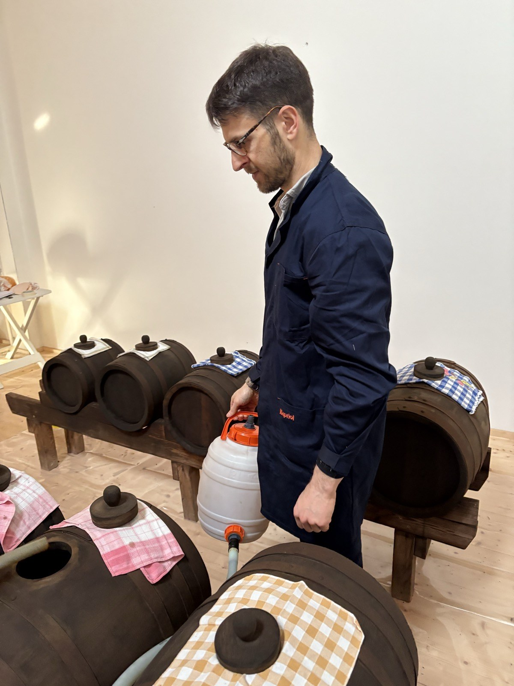
Raffaele durante i travasiRaffaele during the transfersRaffaele beim UmfüllenRaffaele durante los trasiegosRaffaele pendant les transvasementsRaffaele durante as trasfegas
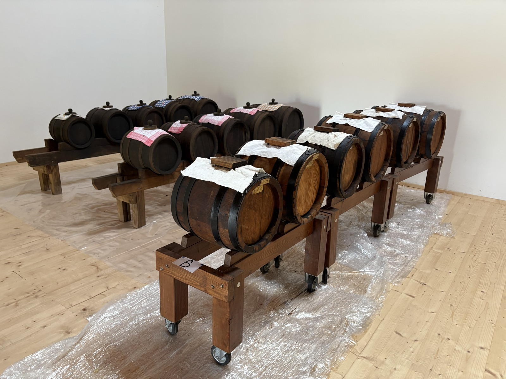
Le tre batterieThe three batteriesDie drei BatterienLas tres bateríasLes trois batteriesAs três baterias
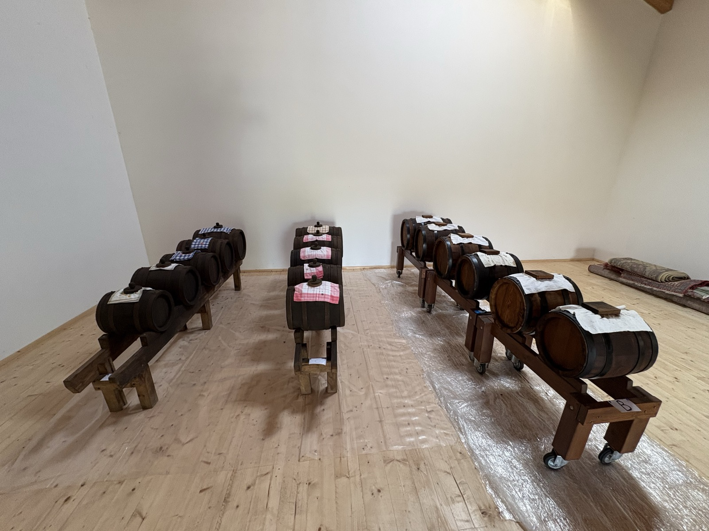
Le batterie, altra vistaThe batteries, another viewDie Batterien, andere AnsichtLas baterías, otra vistaLes batteries, autre vueAs baterias, outra vista
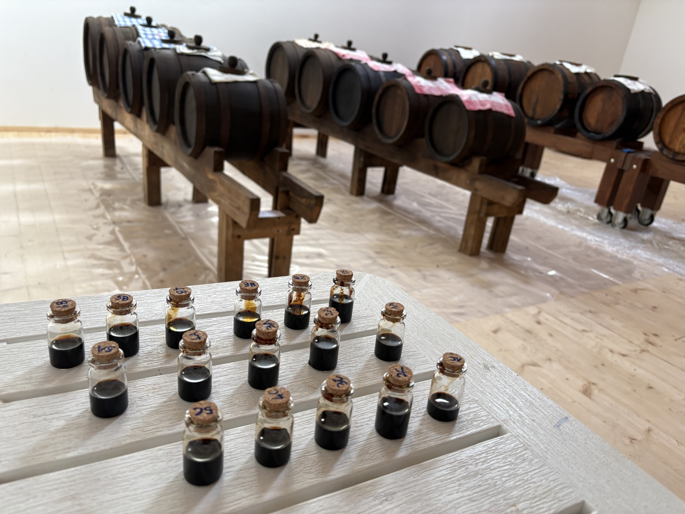
Controlli dei valori di acidità e densitàChecking acidity and density valuesKontrolle von Säure- und DichtewertenControles de los valores de acidez y densidadContrôles des valeurs d'acidité et de densitéControles dos valores de acidez e densidade
L'acetaia vista dall'esternoThe acetaia from outsideDie Acetaia von außenLa acetaia vista desde fueraL'acetaia vue de l'extérieurA acetaia vista de fora
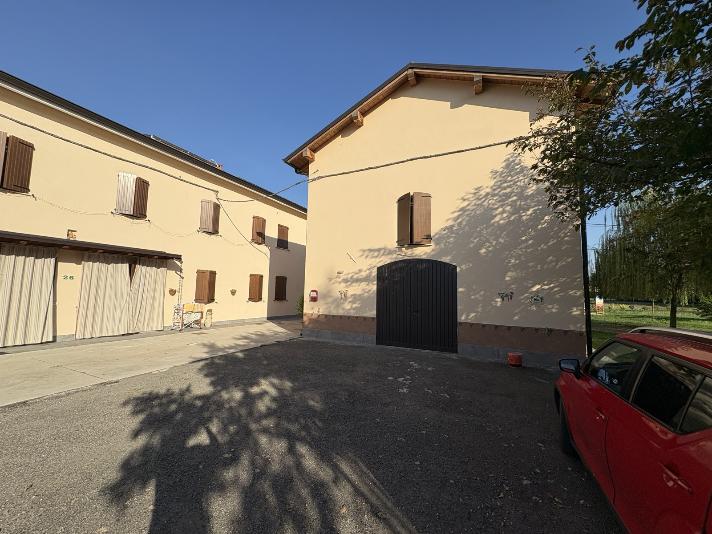
La struttura dell'acetaiaThe acetaia buildingDas Gebäude der AcetaiaLa estructura de la acetaiaLa structure de l'acetaiaA estrutura da acetaia
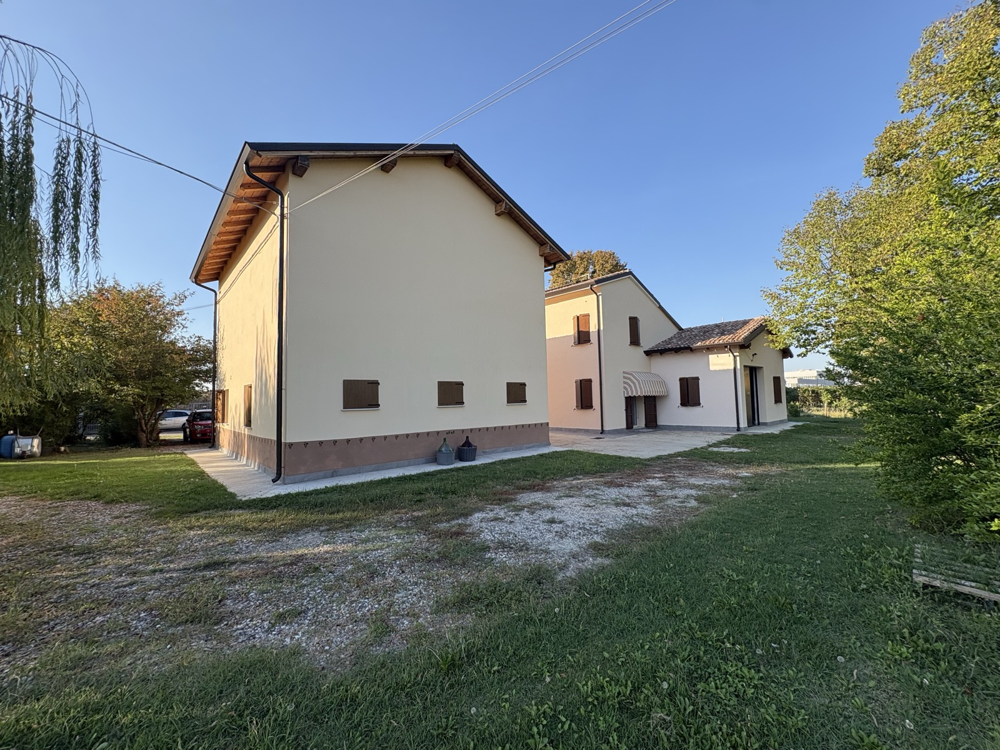
L'acetaia dal retroThe acetaia from the backDie Acetaia von hintenLa acetaia desde atrásL'acetaia vue de l'arrièreA acetaia vista de trás
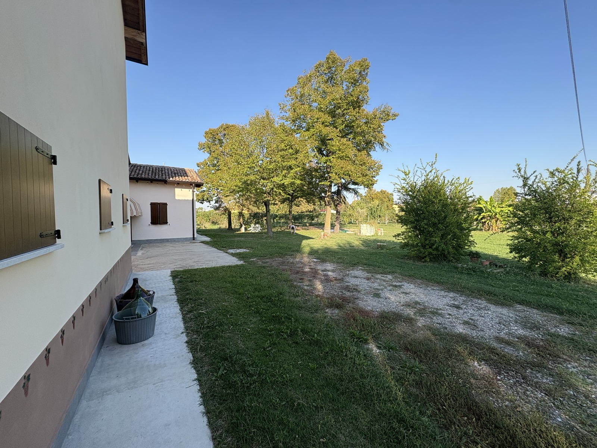
Lo spazio esterno: damigiane, giochi e ortoThe outdoor space: carboys, play and vegetable gardenDer Außenbereich: Glasballons, Spielen und GemüsegartenEl espacio exterior: damajuanas, juegos y huertoL'espace extérieur : dames-jeannes, jeux et potagerO espaço externo: garrafões, brinquedos e horta
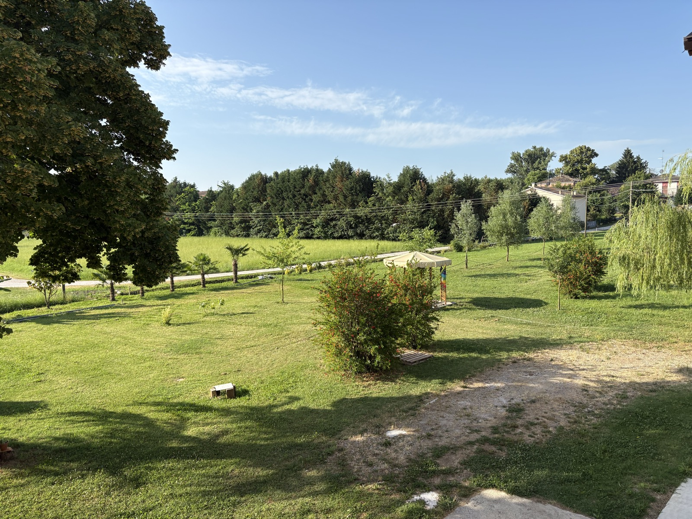
L'area picnic per i rinfreschiThe picnic area for refreshmentsDer Picknickbereich für ErfrischungenLa zona de picnic para los refrigeriosL'aire de pique-nique pour les collationsA área de piquenique para os lanches
Il territorioThe landDie GegendEl territorioLe territoireO território
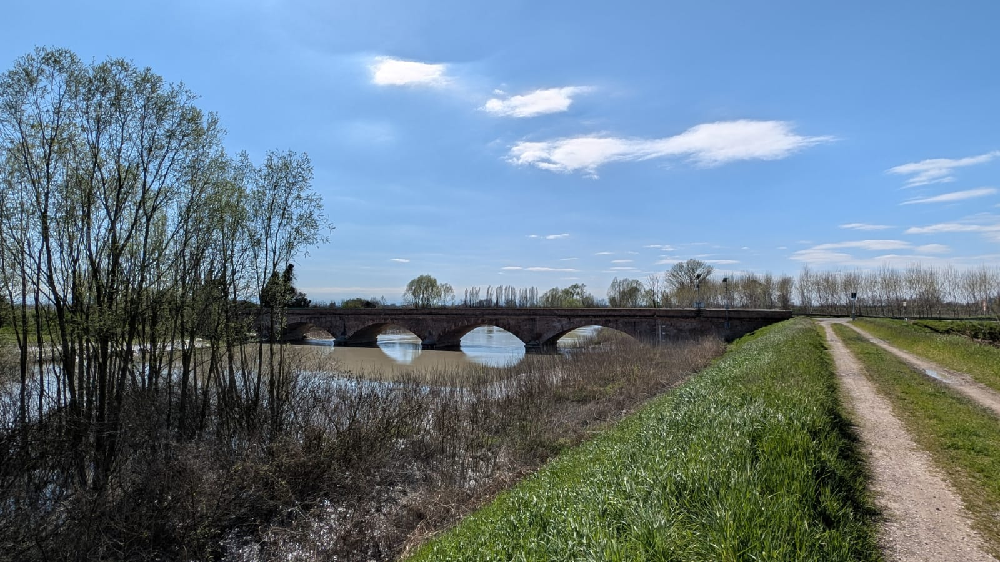
Il Secchia nel suo momento di piena, marzo 2025The Secchia at its flood peak, March 2025Der Secchia bei Hochwasser, März 2025El Secchia en su momento de crecida, marzo de 2025Le Secchia au moment de sa crue, mars 2025O Secchia no seu momento de cheia, março de 2025
Fiore di pescoPeach blossomPfirsichblüteFlor de melocotoneroFleur de pêcherFlor de pessegueiro
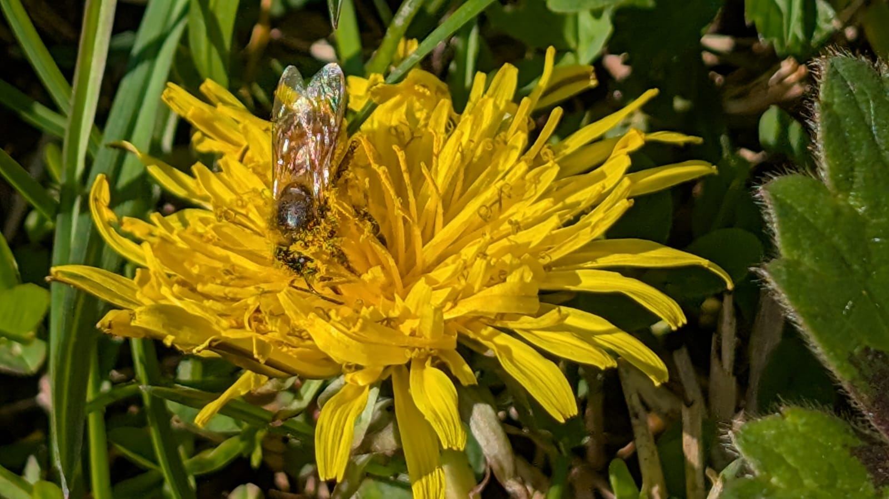
Ape sul tarassacoBee on a dandelionBiene auf LöwenzahnAbeja sobre el diente de leónAbeille sur un pissenlitAbelha no dente-de-leão
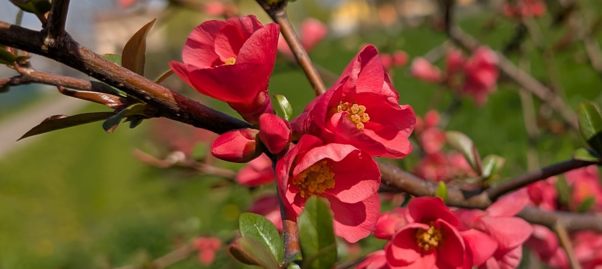
Cotogno del Giappone in fioreJapanese quince in bloomJapanische Zierquitte in BlüteMembrillo del Japón en florCognassier du Japon en fleursMarmeleiro-do-japão em flor